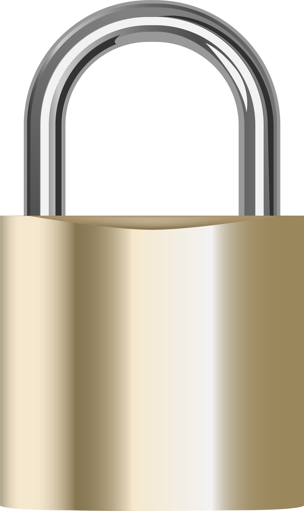
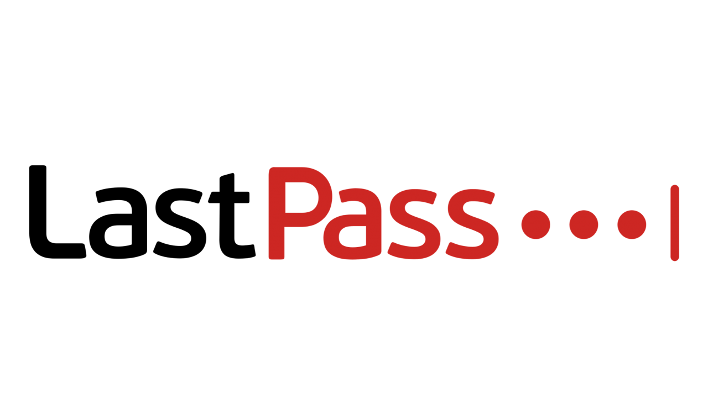

What is Privacy-as-a-Service?
- Privacy-as-a-Service, or PaaS, is not one defined piece of technology such as it is a concept.
- This is a concept wherein privacy itself becomes a commodity, something you can purchase or rent in order to have your data secured and protected.
- Concept was established in Neuromancer, a novel written by William Gibson.
- While a relatively new concept, PaaS is already beginning to come to fruition in the real world.
- Data privacy achieved through advanced ANN (Artificial Neural Network) cryptography.

Examples of PaaS
VPNS
Password Managers
Privacy Assistants
Neuromancer by William Gibson

PaaS as Depicted in Famed 1984 Sci-Fi Novel, Neuromancer
An Excerpt:
[He] saw that it was a solid sandwich of circuitry, nearly a centimeter thick. He helped the man lift it and position it in the doorway. Quick, nicotine-stained fingers secured it with a white velcro border. A hidden exhaust fan began to purr.
"Time," the man said, straightening up, 'and counting. You know the rate, Moll..."
"... we'll want full screen for as long as we want it."
"Hey, that's fine by the Finn, Moll. You're only paying by the second."
They sealed the door behind him, and Molly turned one of the white chairs around and sat on it, chin resting on crossed forearms. "We talk now. This is as private as I can afford."
Some Takeaways
- Neuromancer depicts PaaS as a Privacy Screen, an expensive device that you must pay by the second to use.
- The screen is described as a dome-like device that encapsulates the user.
- As user pays, the screen warps and scrambles the data transferred, making it harder for the outside world to interpret.
Impacts on...
Society and Culture
- Positive
- Gives people power and control over their data
- Gives people more comfort and peace of mind when it comes to their security
- Prevents outer entities (i.e. companies, government, hackers) from violating user privacy via data breaches and harvesting)
- Makes privacy handling easier and more convenient
- Enforces rights to privacy
- Protects against people using your own data against you
- Negative
- Makes privacy a commodity as opposed to a human right; you have to pay to enforce your rights
- Services can be expensive, which means once PaaS becomes mainstream, it will be ideal for the rich but not the poor.

Local World and Economy
- Positive
- Demand for companies that specialize in data security is growing, with hundreds of startups emerging in recent years with such intent, bringing in more revenue on a global scale.
- The appearance of more companies leads to a dramatic increase in job creation
- Money generated by privacy subscription services will funnel back into families, communities and public infrastructure and communications.
- Negative
- Privacy services are often expensive; for example, VPNs cost as much as 20 dollars per month. That’s a considerable amount of money taken from people’s pockets annually
Environment
- Positive
- Infrastructure surrounding the headquarters of data security corporations are improved through gentrification.
- Negative
- In order to accommodate the sprawling amount of privacy startups, habitats have to be destroyed to make room for headquarters and data centers for said startups.
- Suggestions
- Make use of cloud technology to reduce the environmental impact of data centers.
- Don't use dedicated data centers for startups; implement them into their own headquarters to save space.

Health
- Positive
- Consumers less stressed about how their data is treated
- Negative
- Maintaining privacy services can be taxing on employees.
- Suggestions
- With the emergence of Artifical Neural Networks and Artifical Intelligence, it is feasible that these systems could one day be maintained via automation.